>
Luke
Morrison
ELECTRICAL ENGINEERING • EMBEDDED SYSTEMS • PCB DESIGN • FULL-STACK DEV
I work across schematics and PCB layout, firmware and motor control, 3D-printed mechanics, and the web software that ties it together. This site documents the projects, from first high-school boards to current work.
07
Science Olympiad build events led
on a regional championship team
on a regional championship team
04
PCB designs viewable
as interactive 3D models
as interactive 3D models
0
frameworks used
to build this site
to build this site
FIG.01 · LM-1999 MCU · WIREFRAME · drag to rotate
01
About
“A jack of all trades is a master of none, though oftentimes better than a master of one.”
I grew up in a workshop. My dad trained at London's Royal College of Art and taught me to use real tools early: wood, metal, and electronics. Building things has been the default ever since.
Since then it has become a career. I repaired computers and built websites at Bisconti Computers, ran the repair department at Arachnid 360, worked as a test engineer at Columbus McKinnon, and most recently designed custom PCBs and electrical test stations for high-temperature electrolysis R&D at Advanced Ionics.
Outside of work I keep a home lab of Linux servers running that started as Minecraft hosting for friends, kept an aging Mini Cooper on the road, led my Science Olympiad team to a regional championship across seven build events, and sold a 3D-printed product line through a HobbyTown USA. I hold an A.S. from Rock Valley College along with a front-end web development certificate, and I'm finishing a B.S. in Graphic Information Technology (full-stack web development focus) at ASU Online.
The common thread: I like making physical things work reliably, and I like the software that runs them.
- Hardware firstCircuits, boards, and mechanics that survive the real world.
- Iterate fastPrototype, test, and revise. Most projects here took several versions.
- Measure everythingDrop tests, field tests, and measurements guide the decisions.
- Ship real thingsFinished products in real hands, not just demos on a bench.
02
Skills & Systems
The specific tools and techniques, grouped by area.
PCB Design
SYS-02Embedded Systems
SYS-03Firmware
SYS-04Web Development
SYS-05CAD & Prototyping
SYS-06Automation & Testing
SYS-07AI Tools & Local LLMs
SYS-08
03
Featured Projects
Each project links to a case study with photos, video, or interactive models.
03.A
Engineering
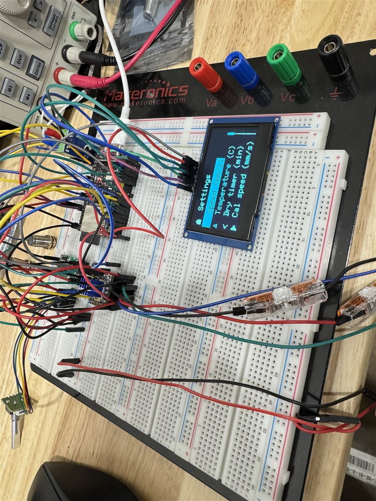
INTERACTIVE 3DPCB DESIGN · TEST EQUIPMENT · MOTION
PCB Model Lab
A small archive of PCB designs: thermocouple interface, motion control, dual DC motor driver, and a machine controller. Viewable as interactive 3D models.
OPEN THE LAB →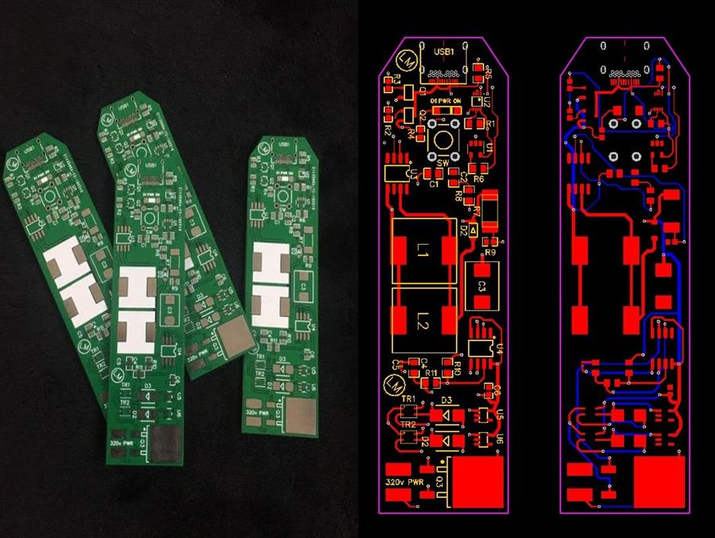
FEATUREDFIRST PCB · HIGH-SCHOOL ARCHIVE
From Breadboards to PCBs
Early hardware from high school: my first fabricated PCB, a USB-C high-voltage inverter for a paintable electroluminescent panel, plus an Arduino Nano LED controller and a 555-timer PWM driver.
OPEN CASE STUDY →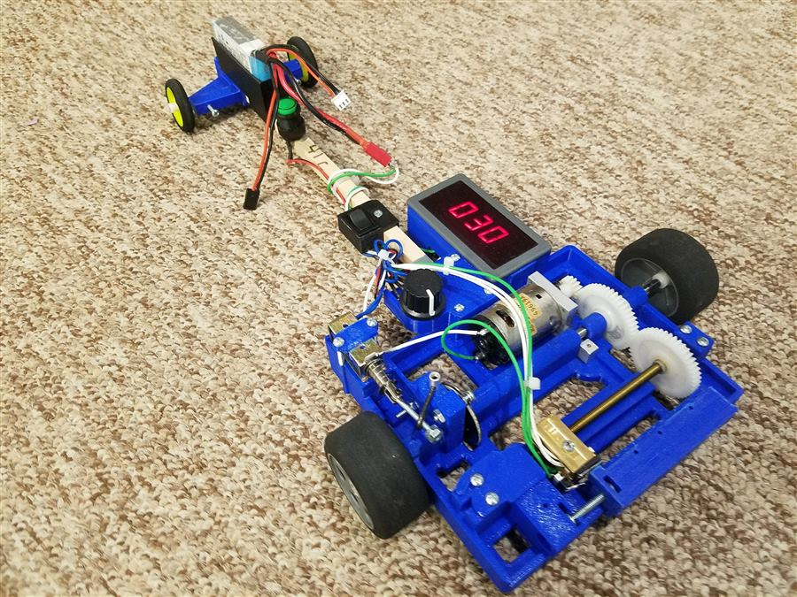
FEATUREDSCIENCE OLYMPIAD · MOTOR CONTROL
Electric Car
Science Olympiad vehicle built to drive a set distance and stop on a target. The final version took 1st at regionals and 2nd at state.
OPEN CASE STUDY →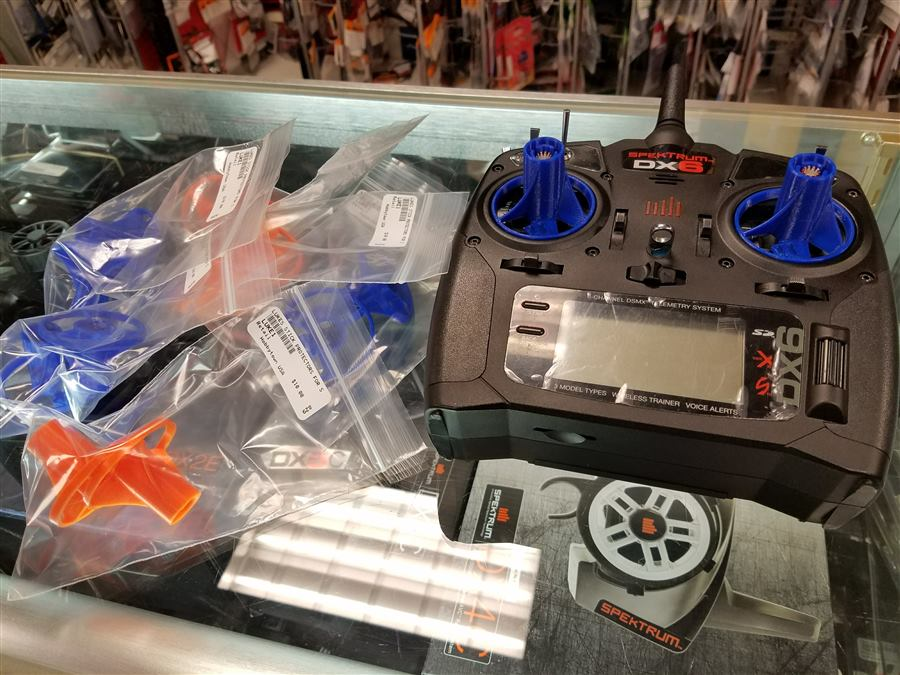
PRODUCT · 3D PRINTING
Gimbal Protector
3D-printed guards that protect RC controller gimbals during transport. Early high-school CAD work, sold through HobbyTown USA.
OPEN CASE STUDY →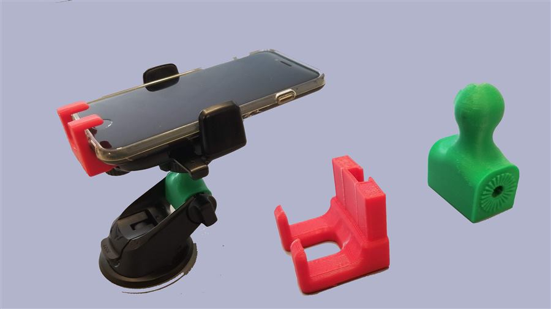
CAD · PROTOTYPING
Adjustable Phone Holder
Replacement 3D-printed parts that modified an existing phone holder to fit a Mini Cooper. Designed in the early days of home 3D printing.
OPEN CASE STUDY →WEB DEVELOPMENT
This Website
This site, hand-coded in vanilla HTML/CSS/JS with custom canvas 3D rendering. No frameworks or build step; the only dependency is the CAD model viewer.
VIEW SOURCE ON GITHUB →
03.B
Fun & Experiments
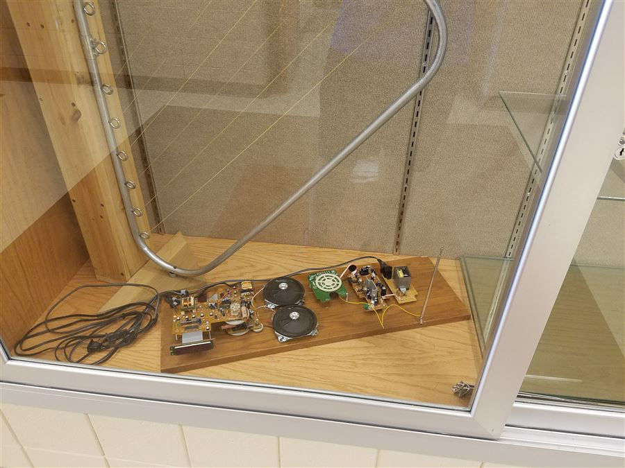
ANALOG · MUSIC · SALVAGE
Scratch-Built Theremin
A playable theremin built from salvaged radio electronics on a wooden plank. Pitch changes with hand distance from the antenna.
OPEN CASE STUDY →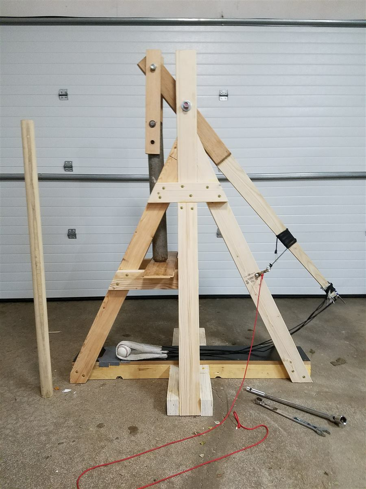
MECHANICAL ENGINEERING
Catapults
Competition catapults, including one that launched a 5-pound rock up to 190 feet. Started as a torsion catapult, finished as a counterweight trebuchet.
OPEN CASE STUDY →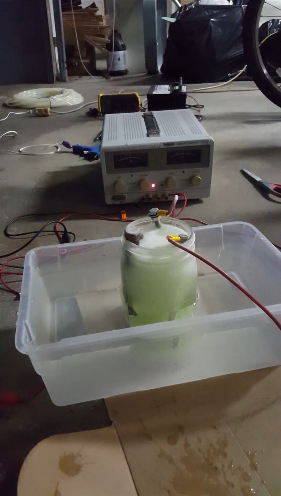
TEST EQUIPMENT · CHEMISTRY
Hydrogen Experiments
Lab and prototype work with hydrogen and electrolysis: a rig for producing and capturing gas over water, with check valves, plus an ignition test.
OPEN CASE STUDY →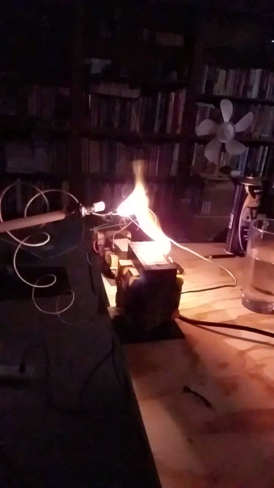
HIGH VOLTAGE · DANGER SCIENCE
Microwave Transformer Arc
A microwave oven transformer repurposed to draw sustained arcs, run at a careful distance with insulated rigging.
OPEN CASE STUDY →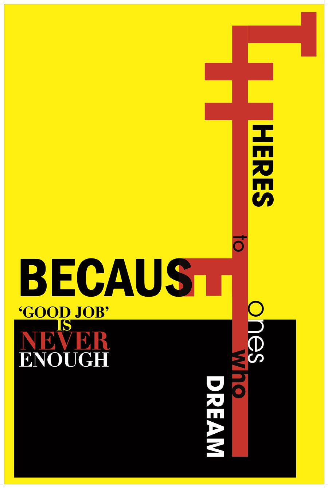
GRAPHIC DESIGN
Graphic Design
Posters, booklet layouts, branding, and class design work, including a complete pamphlet system.
OPEN CASE STUDY →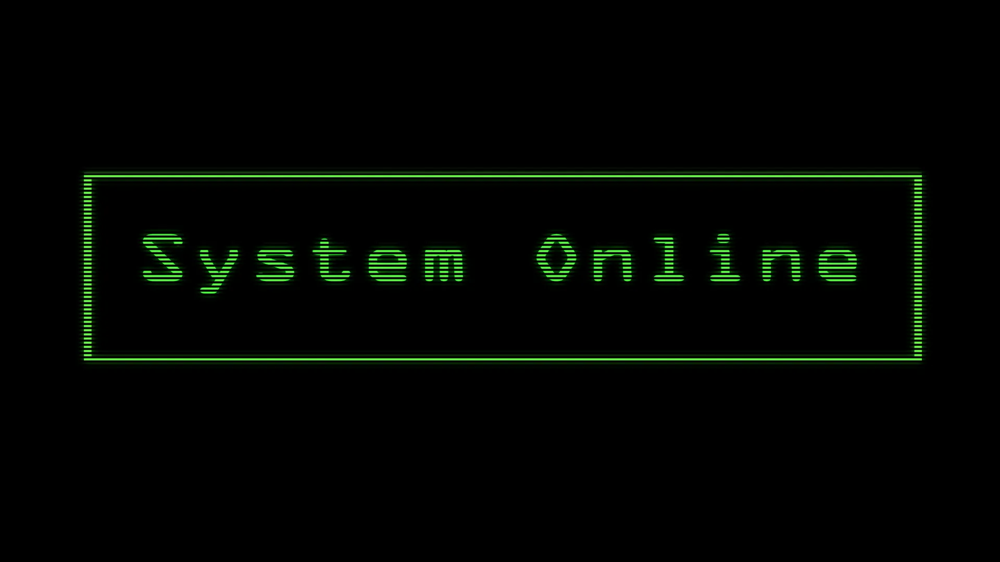
AFTER EFFECTS · GIT 314
Motion Design
Three short After Effects pieces from GIT 314: a CRT boot-up glitch, a paper-airplane short, and the Celsius ad. Presented as its own mini-site.
OPEN THE MINI-SITE →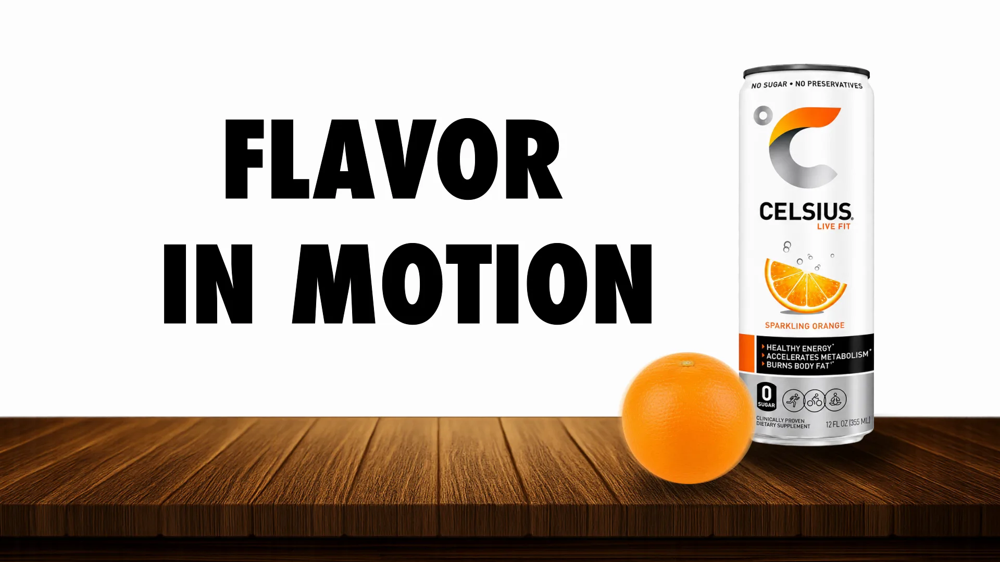
MOTION GRAPHICS · VIDEO
Celsius Ad
A three-second After Effects product ad, documented from creative brief and storyboards to the final spot, plus a 30-second filmed version and product stills.
OPEN CASE STUDY →
04
Experience & Resume
Built from the resume PDF, which you can also download below.
RECENT EXPERIENCE
-
JUN 2025 – APR 2026 · NEW BERLIN, WI
Engineer Technician · Advanced Ionics
- Designed and implemented custom PCBs and electrical systems for tape-caster equipment.
- Built and maintained electrical test stations for high-temperature electrolytic cell R&D.
- Worked cross-functionally with engineering and research teams on new technologies and processes.
-
OCT 2024 – MAY 2025 · MENOMONEE FALLS, WI
Test Engineer · Columbus McKinnon
- Tested and validated industrial radio equipment and electrical control panels.
- Spearheaded process improvements saving $250K annually.
- Covered varied roles: testing, programming, and repairing industrial radios, laser engravers, and motor drives.
-
JAN 2021 – FEB 2023 · LOVES PARK, IL
Head of Repair Department · Arachnid 360
- Diagnosed and repaired customer dart machines and faulty units from the production line.
- Collaborated with production to resolve product issues, contributing to product improvements.
- Assisted the electrical engineering team with soldering prototype boards and designing new electronics.
-
2019 – 2021 · ROCKFORD, IL
Repair Technician & Web Developer · Bisconti Computers
- Coded websites, provided customer service, and diagnosed and repaired hardware failures.
- Specialized in Apple devices, gaming PCs, and servers.
EDUCATION
A.S. in Science, Rock Valley College
Plus a Front-End Web Development Certificate (2015).
B.S. in Graphic Information Technology, ASU
Full-stack web development focus.
SKILLS
SELECTED PROJECTS
Download Resume (PDF)
SAME CONTENT · PORTABLE FORMAT
05 · CONTACT
Let's build something.
Open to engineering roles, freelance builds, and interesting problems in hardware or software.